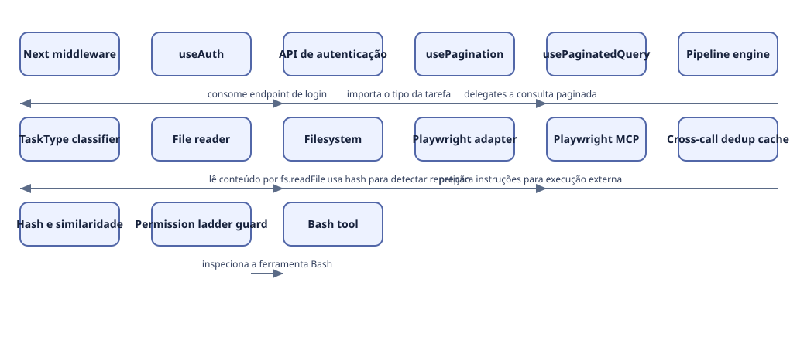

Arquitetura e organograma
Leitura estática de quatorze arquivos: dez arquivos de código do núcleo MCP, proteção de ferramentas, entrypoint e schema de template, mais quatro manifestos/configurações auxiliares. Regras operacionais do kit são separadas de exemplos de aplicação; não há afirmação de produto ou RPA implantado.
O código revisado se divide em limites de aplicação (middleware e hooks), serviços do núcleo MCP, controles de execução e integrações externas. O mapa abaixo mostra somente relações sustentadas pelos trechos revisados.
O mapa separa níveis C4 quando eles foram identificados e mantém relações inferidas explícitas. Não é organograma de pessoas nem prova de deploy.
Contextos e limites
| Contexto | O que representa | Evidência |
|---|---|---|
| Runtime do kit e servidor MCP | Núcleo executável que registra ferramentas MCP, carrega serviços e aplica políticas do kit. | evidence: mcp-server/src/index.ts:61 |
| Aplicação consumidora de referência | Template web separado do runtime MCP; serve como exemplo de aplicação que o kit pode apoiar. | evidence: templates/stack-default/apps/web/package.json:6 |
| Benchmark e experimento | Área de benchmark independente, sem evidência de ser parte do caminho de produção do servidor. | evidence: bench/ab/package.json:2 |
Níveis arquiteturais
| Nível | O que representa | Evidência |
|---|---|---|
| Contexto | Kit de skills com servidor MCP, templates de aplicação e benchmarks em contextos distintos. | evidence: mcp-server/package.json:4 |
| Containers e limites | Servidor MCP, hooks/policies, aplicação web de referência e benchmark possuem responsabilidades e ciclos próprios. | evidence: mcp-server/package.json:5 |
| Componentes | Serviços e bibliotecas internas implementam classificação, pipelines, leitura, deduplicação e guards. | evidence: mcp-server/src/index.ts:16 |
Organograma de módulos

Ver fonte Mermaid
flowchart LR N_auth_middleware[Next middleware] N_auth_hook[useAuth] N_auth_api[API de autenticação] N_pagination_hook[usePagination] N_paginated_query[usePaginatedQuery] N_pipeline_engine[Pipeline engine] N_task_classifier[TaskType classifier] N_file_reader[File reader] N_filesystem[Filesystem] N_playwright_adapter[Playwright adapter] N_playwright_mcp[Playwright MCP] N_dedup_cache[Cross-call dedup cache] N_similarity_engine[Hash e similaridade] N_permission_guard[Permission ladder guard] N_bash_tool[Bash tool] N_auth_hook -->|consome endpoint de login| N_auth_api N_pagination_hook -->|delegates a consulta paginada| N_paginated_query N_pipeline_engine -->|importa o tipo da tarefa| N_task_classifier N_file_reader -->|lê conteúdo por fs.readFile| N_filesystem N_playwright_adapter -->|prepara instruções para execução externa| N_playwright_mcp N_dedup_cache -->|usa hash para detectar repetição| N_similarity_engine N_permission_guard -->|inspeciona a ferramenta Bash| N_bash_tool
Mapa de módulos
| Módulo ou limite | Nível | Tipo | Responsabilidade | Evidência |
|---|---|---|---|---|
| Next middleware | component | control | Aplica fronteiras de rota, sessão por cookie e headers de segurança. | evidence: src/middleware.ts:42 |
| useAuth | component | module | Coordena login, cadastro, logout, cache de queries e navegação do cliente. | evidence: src/hooks/useAuth.ts:31 |
| API de autenticação | component | external | Endpoint consumido pelo hook para iniciar a sessão. | evidence: src/hooks/useAuth.ts:33 |
| usePagination | component | module | Mantém página, parâmetros e limites de navegação sobre uma query paginada. | evidence: src/hooks/usePagination.ts:29 |
| usePaginatedQuery | component | interface | Interface de consulta reutilizada pelo hook de paginação. | evidence: src/hooks/usePagination.ts:5 |
| Pipeline engine | component | module | Transforma o tipo de tarefa em configuração ordenada de etapas, políticas e templates. | evidence: mcp-server/src/lib/pipeline-engine.ts:158 |
| TaskType classifier | component | interface | Fornece o tipo de tarefa usado como chave dos pipelines. | evidence: mcp-server/src/lib/pipeline-engine.ts:1 |
| File reader | component | module | Lê arquivos e monta snippets de código a partir dos caminhos configurados. | evidence: mcp-server/src/services/file-reader.ts:103 |
| Filesystem | component | external | Fonte de conteúdo usada pelo leitor de arquivos. | evidence: mcp-server/src/services/file-reader.ts:10 |
| Playwright adapter | component | module | Monta instruções de screenshot compatíveis com o cliente de browser. | evidence: mcp-server/src/services/playwright.ts:14 |
| Playwright MCP | component | external | Cliente externo que executa as instruções de browser descritas pelo serviço. | evidence: mcp-server/src/services/playwright.ts:1 |
| Cross-call dedup cache | component | module | Mantém uma janela em memória de saídas recentes para detectar duplicação. | evidence: mcp-server/src/lib/cross-call-dedup.ts:177 |
| Hash e similaridade | component | interface | Usa hash exato e comparação de similaridade como caminhos de detecção. | evidence: mcp-server/src/lib/cross-call-dedup.ts:195 |
| Permission ladder guard | component | control | Extrai comandos Bash recebidos pelo hook para aplicar a política de permissão. | evidence: hooks/scripts/permission-ladder-guard.mjs:104 |
| Bash tool | component | external | Ferramenta cuja entrada é inspecionada pelo guard de permissões. | evidence: hooks/scripts/permission-ladder-guard.mjs:106 |
Relações
| Origem → destino | Relação | Confiança | Evidência |
|---|---|---|---|
| auth-hook → auth-api | consome endpoint de login | observed | evidence: src/hooks/useAuth.ts:33 |
| pagination-hook → paginated-query | delegates a consulta paginada | observed | evidence: src/hooks/usePagination.ts:29 |
| pipeline-engine → task-classifier | importa o tipo da tarefa | observed | evidence: mcp-server/src/lib/pipeline-engine.ts:1 |
| file-reader → filesystem | lê conteúdo por fs.readFile | observed | evidence: mcp-server/src/services/file-reader.ts:10 |
| playwright-adapter → playwright-mcp | prepara instruções para execução externa | inferred | evidence: mcp-server/src/services/playwright.ts:2 |
| dedup-cache → similarity-engine | usa hash para detectar repetição | observed | evidence: mcp-server/src/lib/cross-call-dedup.ts:195 |
| permission-guard → bash-tool | inspeciona a ferramenta Bash | observed | evidence: hooks/scripts/permission-ladder-guard.mjs:106 |
Lacunas e limites
- O mapa cobre somente os oito arquivos revisados; o wiring completo do servidor MCP e as dependências entre todos os módulos ainda precisam de leitura semântica.
- Não há evidência suficiente nesta amostra para desenhar organogramas de times, ownership ou deploy.
- A relação entre middleware e o hook de autenticação permanece fora do diagrama porque o trecho revisado não mostra uma chamada direta entre eles.